Profile library
include(joinpath(@__DIR__, "plot_profiles.jl"))z-profiles
AtmosphericProfilesLibrary.Soares_q_tot — Function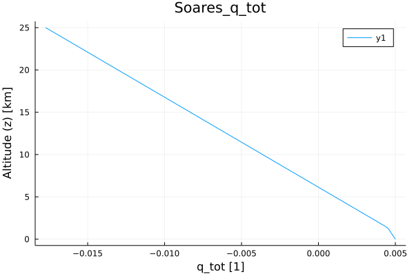
AtmosphericProfilesLibrary.Soares_θ_liq_ice — Function
AtmosphericProfilesLibrary.Soares_u — Function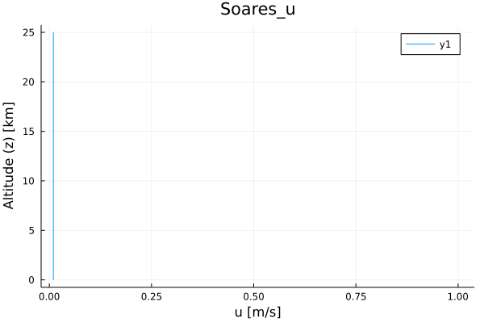
AtmosphericProfilesLibrary.Soares_tke — Function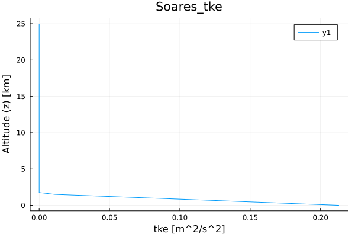
AtmosphericProfilesLibrary.TRMM_LBA_p_in — Function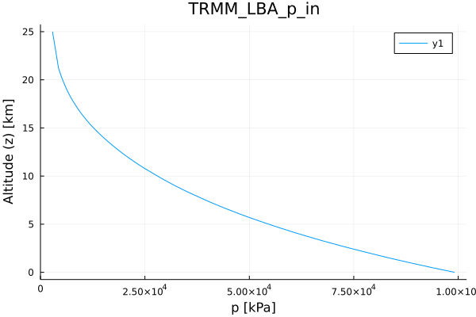
AtmosphericProfilesLibrary.TRMM_LBA_T_in — Function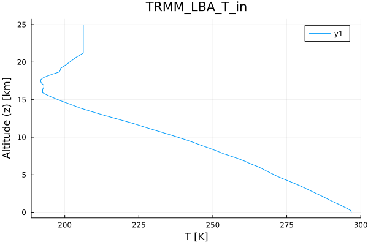
AtmosphericProfilesLibrary.TRMM_LBA_RH_in — Function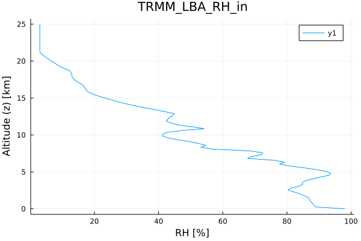
AtmosphericProfilesLibrary.TRMM_LBA_u_in — Function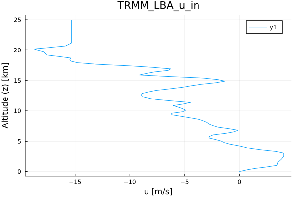
AtmosphericProfilesLibrary.TRMM_LBA_v_in — Function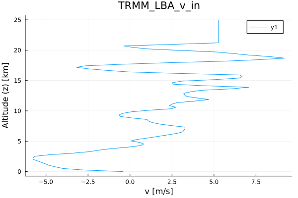
AtmosphericProfilesLibrary.Rico_geostrophic_ug — Function:(
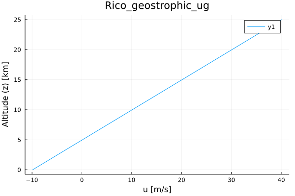
AtmosphericProfilesLibrary.Rico_geostrophic_vg — Function:(
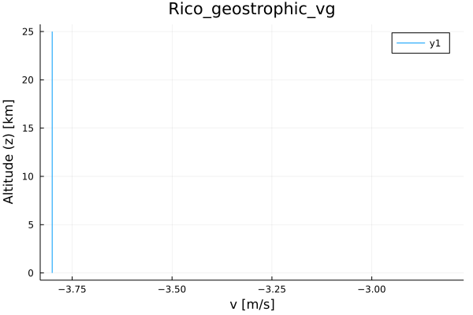
AtmosphericProfilesLibrary.Rico_dqtdt — Function:(
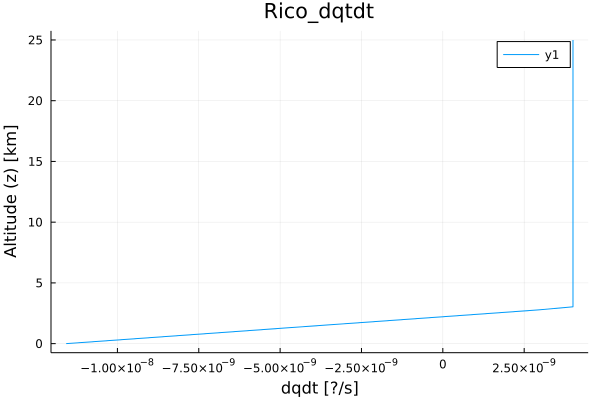
AtmosphericProfilesLibrary.Rico_subsidence — Function:(
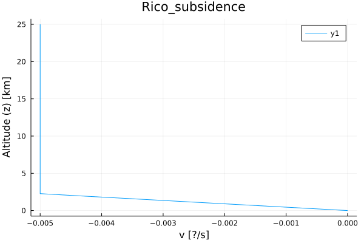
AtmosphericProfilesLibrary.DryBubble_θ — Function:(

tz-profiles
AtmosphericProfilesLibrary.TRMM_LBA_radiation — Function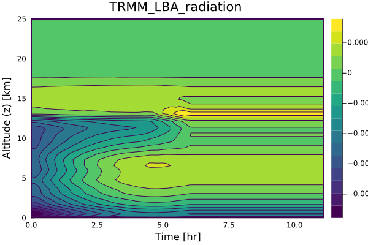